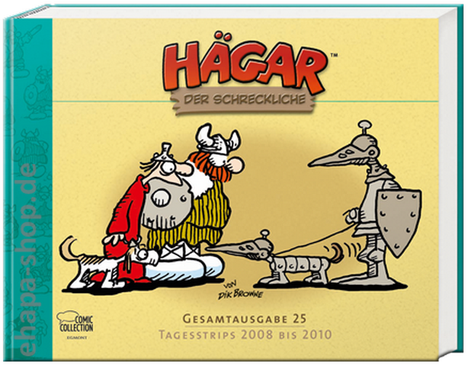

von Uwe Anton

Hägar der Schreckliche – Gesamtausgabe 25 (© Egmont Verlag GmbH)
(ua) – …wenn man trotzdem lacht. Weiß doch jeder. Aber das verrät uns nicht, was Humor eigentlich ist. Wobei das »trotzdem« verräterisch ist. Eigentlich ist einen nicht zum Lachen zumute, aber man lacht eben »trotzdem«.
Auch Chris Browne, Sohn des viel zu früh verstorbenen Dik und damit des Erfinders von Hägar, der die Arbeit seines Vaters kongenial fortführt, muss sich diese Frage des Öfteren stellen. Schließlich lebt er davon, Tag für Tag witzig zu sein, sogar am Sonntag, wenn andere Menschen frei haben. Seit 1973 erscheint der Zeitungs-Strip mit beruhigender Regelmäßigkeit zur Erheiterung der Leser in jeder Menge Herren Länder.
Vater Dik, beim ersten Erscheinen von Hägar schon ein Veteran der Branche, wusste, wie man’s macht. Man braucht einen überschaubaren Personenkreis, genau, wie die erfolgreichen Sit-Coms im Fernsehen ihn haben. Ideal ist eine vierköpfige Familie: Vater (in diesem Fall eben der Wikinger Hägar, Beiname »Der Schreckliche«), Mutter Helga (resolut), Tochter Honi (einfach nur blond) und Sohn Hamlet (aus der Rolle fallend, eher normal und damit unter Wikingern lebensuntauglich). Dann noch ein paar Nebenfiguren: Sven Glückspilz (der ironische Name ist Programm), der Hund Snert (einem realen Hund nachempfunden und damit immer für gut aufbereitete Gags tauglich), eine Ente, ein Arzt, ein Anwalt, die Steuereintreiber, der Hunne Attila (hey, wir sind hier in einem Comic und stören uns nicht an Realitäten), um die wichtigsten zu nennen.
So ein Personarium hat das nötige Konfliktpotenzial, ist aber nicht per se lustig und sorgt an sich nicht unbedingt für einen über 40 Jahre anhaltenden Erfolg. Das Erfolgsrezept ist der Humor in Hägar. Was ist also Humor? »Die Begabung eines Menschen, der Unzulänglichkeit der Welt und der Menschen, den alltäglichen Schwierigkeiten und Missgeschicken mit heiterer Gelassenheit zu begegnen«, versucht sich das Herkunftswörterbuch des Duden an einer Definition. Na schön. Aber warum »gelingt« mancher Humor eben und anderer nicht? Warum ist das von Mensch zu Mensch verschieden? Der eine Teil der Bevölkerung findet eine DPA-Meldung vom März dieses Jahres schreiend komisch. Da wurde die Waschanleitung eines Sporthemds aus Indonesien abgedruckt. »Gib dieses Hemd deiner Frau. Es ist ihr Job.« Der andere, offensichtlich die Mehrheit der Indonesier, eher weniger. Diese »chauvinistische Waschanleitung« hat in den lokalen sozialen Netzwerken einen »Sturm der Entrüstung« ausgelöst. Mal ganz abgesehen von der Frage, was an solchen Netzwerken sozial sein soll, könnte man jetzt witzeln, dass die Indonesierinnen ihren Männern vielleicht die Hölle heiß gemacht haben, damit sie sich dagegen empören. Natürlich ist die Einstellung, die dahinter steht, frauenfeindlich. Wenn man nachhakt, tun sich wahrscheinlich ganze Abgründe an jahrhundertelanger Unterdrückung auf. Aber Humor berücksichtigt keine Einzelschicksale. Diese Waschanleitung belegt genauso, dass Männer im Prinzip faule Schweine sind, die Frauen für sich arbeiten lassen. Unterstützt die Waschanleitung nun die Unterdrückung der Frau, oder entlarvt sie die Unfähigkeit oder zumindest Bequemlichkeit des Mannes?
Oder haben die Indonesier einen ganz eigenartigen Humor, den keiner sonst versteht? Zwei Tage später wurde bekannt, dass eine andere Bewohnerin des Inselstaates durch eine Anzeige zum Internetstar geworden ist: »Jahrhundertangebot: Haus zu kaufen und Besitzerin als Ehefrau verfügbar.« Sie habe dieses Angebot »lustig gemeint«, erklärte die Frau, als Reporter auf ihrer Matte Schlange standen und Interviews einforderten.
Da stellt sich doch die Frage: Können Frauen frauenfeindlich sein?
Genau in diese Grauzone stößt Hägar. Das ist nicht geographisch gemeint, mit Indonesiern hat der weitgereiste Wikinger es noch nicht zu tun bekommen. Aber inhaltlich: etwa, wenn die werte Angetraute sich beklagt, dass sie es leid ist, den ganzen Tag in der Küche zu stehen, um zum Wachstum von Hägars Schmerbauch beizutragen, und ihr liebender Gatte sie (sinngemäß) zutreffend korrigiert: »Aber das stimmt doch gar nicht, Schatz. Du verbringst auch viel Zeit mit Waschen und Bügeln.«
Frauenfeindlich, politisch eher unkorrekt, aber auch entlarvend. Bekommt nicht Hägar hier sein Fett weg, wenn er als dummer Chauvi dargestellt wird, der auch noch glaubt, was er sagt? Political correctness kannten die alten Wikinger noch nicht. Würden sie sich daran halten, gäbe es Hägar gar nicht. Hier werden ständig Witze über schützenswerte Minderheiten gerissen, über Engländer, Schlossbesitzer, Steuereintreiber und sogar Wikinger-Könige. Und das ist oft, aber natürlich nicht immer, schreiend komisch, zumindest in den Augen des Verfassers, der sich damit als politisch unkorrekt, chauvinistisch und unsensibel entlarvt. Doch er steht nicht allein damit, sonst hätte Hägar sich nicht seit 40 Jahren auf dem Markt behauptet. Man liest den Wikinger-Strip, weil er witzig ist.
Moment … wenn man es genau nimmt, ist Hägar eigentlich kein Wikinger-Strip. Gab es damals schon den Sport Golf, den der Hausarzt mit Inbrunst betreibt? Arztpraxen, in denen man ewig warten musste? Restaurants, in denen man im dunkelsten nordischen Barbarenland die schmackhaftesten französischen Gerichte bekam? Wohl kaum. Hägar tarnt sich also nur als Wikinger und ist nichts anderes als ein Zerrspiegel auf unsere Welt, unsere Sitten und Gebräuche und deren Auswüchse. Der Strip nutzt damit nichts anderes wie auch die Science Fiction: Er hält uns ein Bild vor, in dem wir uns selbst erkennen. Es ist ein amerikanischer Strip der Gegenwart, aber da die Amerikanisierung unserer Gesellschaft schon weit fortgeschritten ist, erkennen wir – und Leser in aller Herren Länder – uns ebenfalls darin wieder. Außer vielleicht in Indonesien.
Hägar ist genau genommen ein respektloser Strip, der vor nichts zurückschreckt. Wenn ein Missionar (sinngemäß) Hägar anspricht: »Mein Sohn, ich bringe dir die Zivilisation!«, und Hägar antwortet: »Fein. Ich hab grad keine Zeit, stell sie dort ab!«, wird auf den ersten Blick der Mann Hägar lächerlich gemacht (zumindest in Deutschland auch eine Minderheit, wenn auch mit 49 % eine große). Aber erschließt sich nicht mehr daraus? Ist das nicht Religions- und Kulturkritik? Doch auch das bringt uns nicht weiter bei der Erörterung, was genau nun Humor ist. Bei Hägar bekommen alle ihr Fett weg, die mutigsten Krieger, die fleißigsten Frauen, die dümmsten Töchter, die nun mal zufällig blond sind, die klügsten Söhne, die einfach ihrer Zeit weit voraus sind, sogar die liebenswürdigsten Hunde, die doch einen gewissen Charakter haben. Die Leser erkennen sich selbst und ihre reale Gegenwart. Und finden das offensichtlich witzig und lachen trotzdem. Auch noch nach 40 Jahren, auch, wenn der schiffbrüchige Wikinger zum hundertsten Mal auf einer einsamen Insel gestrandet ist und an den Kommentaren seines besten, aber nicht besonders intelligenten Freundes verzweifelt. Warum? Vielleicht wegen der Vielschichtigkeit von Humor, die sich jeder Definition widersetzt?
Erzählen wir mal einen uralten Witz:
Ein Deutscher, ein Schweizer und ein Holländer werden in Saudi-Arabien beim dort strengstens verbotenen Konsum von Alkohol erwischt. Der Sultan lässt sie vorführen, sieht sie sich an und sagt: »Für den Konsum von Alkohol bekommt ihr eine Strafe von 50 Peitschenhieben! Aber da ihr Ausländer seid und von dem Verbot nichts wusstet, will ich gnädig sein. Ihr habt vor der Strafe noch einen Wunsch frei! Fang du an, Schweizer.«
»Ich wünsche mir, dass Ihr mir ein Kissen auf den Rücken bindet, bevor Ihr mich auspeitscht.«
Der Wunsch wird ihm erfüllt, doch leider zerreißt das Kissen unter der Wucht der Peitschenhiebe bereits nach 25 Schlägen.
Der Holländer, der das sieht, wünscht sich, dass man ihm zwei Kissen auf den Rücken bindet. Gesagt, getan, doch leider reißen auch bei ihm die Kissen frühzeitig.
Nun wendet sich der Sultan an den Deutschen und sagt: »Nun, Deutscher, da ich ein großer Fußballfan bin und ihr so schön Fußball spielt, bin ich dir besonders gnädig! Du hast zwei Wünsche frei! Aber wähle gut!«
Sagt der Deutsche: »Okay, schon gewählt, zuerst hätte ich gern 100 Peitschenhiebe statt nur 50!«
Der Holländer und der Schweizer schauen sich entgeistert an.
»Ich verstehe es zwar nicht«, sagt der Sultan, »aber es sei dir die doppelte Zahl an Hieben gewährt! Und dein zweiter Wunsch?«
»Bindet mir den Holländer auf den Rücken!«
Nun mag der Verfasser dieser Zeilen Holländer, hat nur gute Erfahrungen mit ihnen gemacht und niemals Schwierigkeiten mit ihnen gehabt. Er versteht sich bestens mit dem holländischen Übersetzer seiner Perry Rhodan-Romane, schätzt die aufgeklärte, freiheitliche Denkungsweise der Holländer, die er kennt. Er ist Anhänger eines Fußballvereins, dessen holländischer Spieler derzeit als der beste der Bundesliga, wenn nicht sogar der Welt gehandelt wird. Er isst für sein Leben gern diese rätselhaften Frikandel, deren Inhalt ein Geheimnis ist, das man gar nicht ergründen möchte. Und findet den Witz trotzdem lustig.
Gegen wen richtet er sich überhaupt? Gegen die Holländer? Oder gegen die Deutschen, die so grausam sind? Gegen den Fußball als Sport? Gegen die traditionelle Rivalität zwischen Holländern und Deutschen, vor allem im Fußball? Oder gar gegen die Herrscher von Saudi-Arabien? Müssen wir jetzt mit Reaktionen extremer religiöser Fanatiker rechnen?
Keine Ahnung. Wie bei Hägar kann man den Finger nicht auf das legen, was Humor ist. Aber wir lachen trotzdem.
Bei der Egmont Comic Collection ist vor kurzem der 25. Band der Hägar-Gesamtausgabe erschienen. Wir werden uns leider auf längere Wartezeiten einstellen müssen. Der 25. Band umfasst die Tagesstrips von 2008 bis 2010. Rechnet man die gesondert erscheinenden Sonntagsseiten ein, hat das Vergnügen in vier, fünf Bänden mangels Nachschub ein Ende. Dann müssen wir drei Jahre auf den nächsten Band warten, bei den getrennt erscheinenden Sonntagsseiten sogar noch länger. Was schade ist. Aber »Hut ab!« vor dem Durchhaltevermögen des Verlags, der die schmalformatigen Hardcover konsequent auf dem deutschen Comic-Markt etabliert hat und nun kurz vor der Vollendung der Komplettausgabe steht. Schade nur, dass Hägar lediglich in Schwarzweiß verlegt wird. Aber das Paradies für Hägar-Fans – eine farbige Ausgabe – ist wirtschaftlich gesehen wohl nicht tragbar. Begnügen wir uns also mit den Jungfrauen, die uns im Paradies erwarten, oder je nach Lesart eben mit den Obstkörben. Hägar hätte an beidem seinen Spaß.
Hägar der Schreckliche
Dik [i.e. Chris] Browne
Gesamtausgabe 25
Tagesstrips 2008 – 2010
Egmont Comic Collection, Köln 2015, 320 Seiten